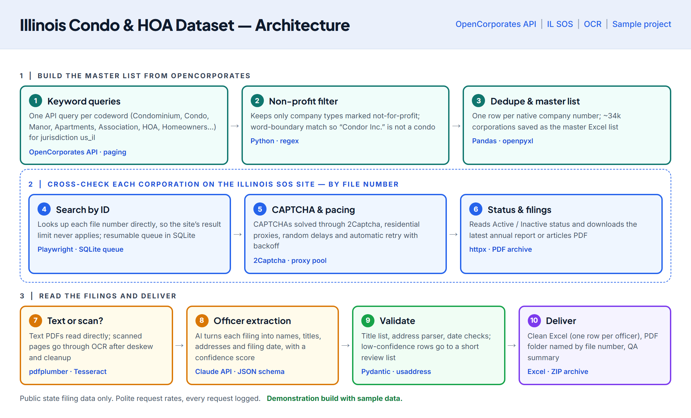
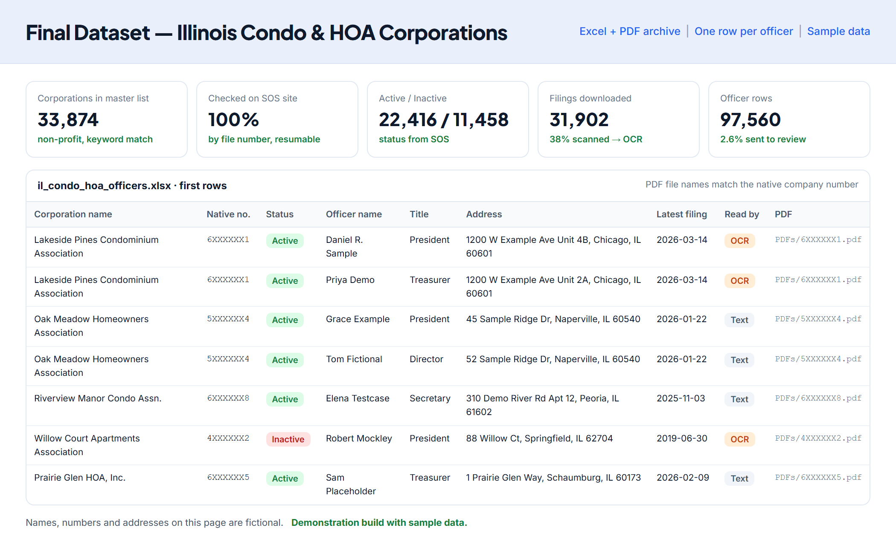

Architecture: master list from OpenCorporates, Secretary of State cross-check, then PDF reading and delivery. One scanned filing read with OCR, turned into structured officer data by AI and checked.
One scanned filing read with OCR, turned into structured officer data by AI and checked.
Final Excel: one row per officer, with status, latest filing date and a matching PDF.The challenge
The client sells services to condominium and homeowners’ associations in Illinois and needed a complete list of them, with the current board members. No single source has this. OpenCorporates has the corporate list but not the officers. The Illinois Secretary of State site has the filings, but it uses CAPTCHAs, limits how many results a search returns, and keeps officer details inside PDFs, many of them scanned images. The client wanted the whole process automated, not done by hand.
The solution
I split the work into three automated stages. First, the OpenCorporates API builds a master list of Illinois non-profit corporations whose names contain the client’s codewords. Second, each corporation is looked up on the Secretary of State site directly by its file number, so the result limit never applies, and its status and latest filing PDF are saved. Third, each PDF is read (directly if it has text, with OCR if it is a scan), and AI pulls out every director and officer with name, title, address and filing date. Everything lands in one clean Excel file, with the PDFs kept in a folder for checking.
How it works
- Query OpenCorporates by keywordOne paged API query per codeword (Condominium, Condo, Manor, Apartments, Association, Associations, HOA, Homeowners and the combined phrases) for the Illinois jurisdiction.
- Keep only likely associationsOnly non-profit company types are kept. Word-boundary matching stops false hits such as a company called “Condor”. Duplicates across keywords are merged on the native company number.
- Save the master listAbout 34,000 corporations with name and native company number are saved to Excel before the next stage starts, so the client can review the list early.
- Look up each file number on the Secretary of State sitePlaywright searches by file number, one corporation at a time, from a resumable SQLite queue. A crash or a block never means starting over.
- Handle CAPTCHAs and blocksCAPTCHAs are solved through 2Captcha. Requests go through a residential proxy pool with random delays, and failed lookups are retried with backoff.
- Save status and the latest filingThe page gives Active or Inactive status, and the most recent annual report (or the articles of incorporation if there is no report) is downloaded and named by file number.
- Read the PDFpdfplumber reads text PDFs. Scanned pages are cleaned up with OpenCV (deskew, denoise, 300 dpi) and read with Tesseract OCR.
- Extract officers with AIThe Claude API turns each filing into a fixed JSON schema: name, title, street, unit, city, state, ZIP and filing date, with a confidence score.
- Validate and deliverTitles are checked against an allowed list, addresses parsed, dates compared with the SOS record. Low-confidence rows go to a short review sheet. The final Excel has one row per officer.
Technical challenges and how they were solved
- CAPTCHAs on the Secretary of State site: 2Captcha integration, with solve time and cost logged per request
- Search result limits: every lookup is done by the exact file number from OpenCorporates, never by broad name search
- Scanned PDFs: image cleanup before Tesseract OCR, then AI extraction that copes with messy OCR text
- Different filing layouts over the years: AI extraction to a fixed schema instead of brittle position-based parsing
- Long runs over tens of thousands of records: a resumable queue, checkpoints and a daily progress report
- Name keywords that catch the wrong companies: word-boundary rules plus the non-profit filter
Deliverables
- Excel and CSV dataset: corporation name, native company number, status, officer names, titles, addresses and latest filing date
- A folder of downloaded filing PDFs, each named by file number for easy checking
- A short review sheet for low-confidence rows, and a QA summary with counts at every stage
- The Python code, a README and a one-command re-run for future updates
Results
- 33,874 corporations in the master list, every one checked on the Secretary of State site
- 31,902 filing PDFs downloaded, 38% of them scanned images read with OCR
- 97,560 officer rows, with only 2.6% needing a quick manual check
- Fully automated end to end, so the client can refresh the list every year with one command
Demonstration build with sample data. Names, file numbers and addresses in the images are fictional.
Other projects

Daily new filings from five county clerk sites, read with OCR and AI, matched to property appraiser records and scored as leads.

Every license on a state licensing board site tracked weekly, enriched with websites and AI labels, and turned into sales signals.

A daily Python pipeline that collects about 42,000 products, prices and stock levels from a grocery app with no public API.